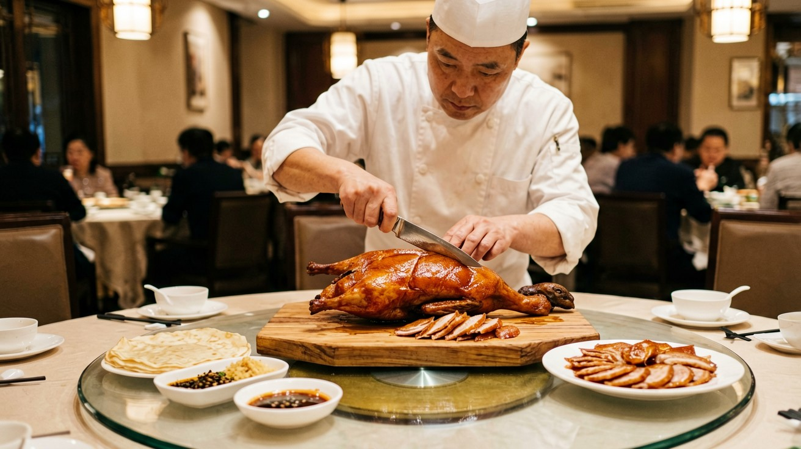
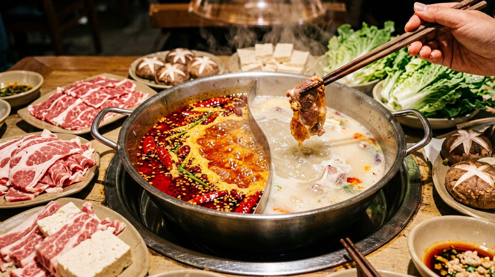
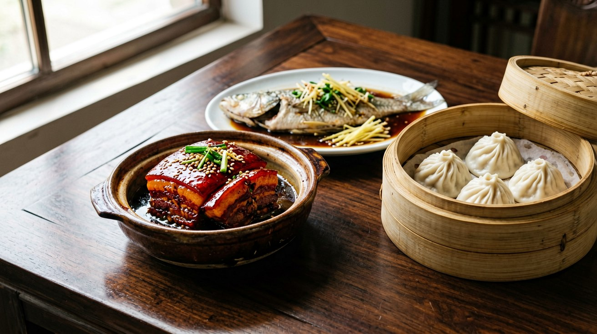
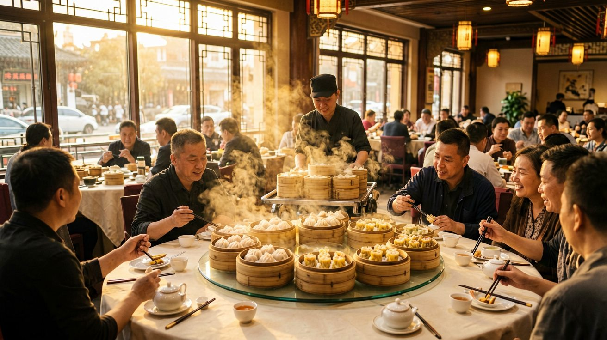

Last updated: June 2026.
China is not one food culture — it is at least eight, spread across a country the size of a continent. A meal in Beijing tastes nothing like a meal in Guangzhou. The chili heat of Sichuan will feel like a different planet from the delicate sweetness of Hangzhou. If you are traveling to multiple cities, knowing which foods belong to which regions transforms your trip from random ordering into a deliberate tour of China's culinary geography. This guide maps out the major regional cuisines, the dishes that define them, and where to find them.
![[比例:16:9] High-end travel magazine infographic showing a detailed China map on cream parchment background with clear provincial boundaries, multiple realistic food illustrations scattered across regions: golden crispy Peking duck being carved near Beijing, bubbling red chili hot pot in Sichuan, delicate dim sum in bamboo steamer in Guangdong, soup dumplings xiaolongbao near Shanghai, golden dumplings in Shandong, lamb skewers on a grill in Xinjiang, decorative border and compass rose, like a National Geographic food travel magazine feature page, no text labels, visually rich and appetizing](images/regional-cuisines-01-culinary-map.jpg)
Chinese cooking is traditionally divided into the Eight Great Traditions — eight regional cuisines that developed over centuries based on local climate, agriculture, and history. They are: Sichuan (川), Cantonese (粤), Jiangsu (苏), Zhejiang (浙), Fujian (闽), Hunan (湘), Anhui (徽), and Shandong (鲁). Each has a distinct flavor profile and cooking philosophy.
For a traveler, memorizing all eight is not necessary. What matters is understanding the broad flavor zones of the country: the wheat-and-lamb north, the chili-and-numbing-pepper southwest, the soy-and-sugar east, and the fresh-seafood south. Most of the food you encounter on a typical China trip will fall into one of these four zones, and this guide covers each in turn.
A note before we dive in: these categories describe the traditional culinary identity of each region. In practice, every major Chinese city now has restaurants from all over the country. You can eat excellent Sichuan food in Shanghai and decent Cantonese food in Beijing. But eating a region's food in its place of origin — Sichuan hot pot in Chengdu, Peking duck in Beijing, dim sum in Guangzhou — is one of the great pleasures of traveling in China.

Northern Chinese food is built on wheat, not rice. The climate is colder and drier than the south, so wheat-based staples — noodles, steamed buns, dumplings, flatbreads — form the backbone of every meal. Lamb and mutton are common proteins, reflecting the influence of the Mongolian and Muslim communities that have shaped the region's food for centuries. Flavors tend toward the savory and salty, with garlic, sesame oil, and dark soy sauce as the core seasonings.
Beijing. The capital's signature dish is Peking duck, but the city's food culture runs deeper than that. Zhajiangmian — thick wheat noodles topped with a rich fermented soybean paste and shredded cucumber — is Beijing's everyday comfort food. Mongolian hot pot, where thinly sliced lamb is swished through a copper pot of plain boiling broth and dipped in sesame sauce, is a winter staple. In the Muslim neighborhoods around Niujie, you will find lamb-heavy dishes and sesame flatbreads that trace back to the Silk Road. For breakfast, try a jianbing from a street cart — a savory crepe with egg, hoisin, chili, and a crispy cracker folded inside.
Shandong. Shandong cuisine is the foundation of much of northern Chinese cooking. It is characterized by an emphasis on salty flavors, crispy textures, and seafood from the Yellow Sea. Braised sea cucumber with scallions and sweet-and-sour carp are two of the province's most famous dishes. Shandong is also where the technique of quick-frying (bao) was refined, and its influence can be felt in Beijing's restaurant kitchens to this day.
The Northeast (Dongbei). The northeastern provinces of Liaoning, Jilin, and Heilongjiang have a food culture shaped by long, brutal winters. Hearty stews, pickled vegetables (especially suancai, fermented Napa cabbage), and large, thick-skinned dumplings are the norm. Guo bao rou — crispy pork slices in a sweet-and-sour sauce — is the region's most famous export. Portions in Dongbei restaurants are famously enormous; order cautiously.

This is the region that made Chinese food famous for being spicy. But the heat here is not one-dimensional — each province has its own relationship with chili, and the differences matter.
Sichuan. Sichuan food is not just spicy; it is numbing. The Sichuan peppercorn (hua jiao) produces a tingling, almost electric sensation on the lips and tongue that the Chinese call "ma." Combined with dried chilies and chili bean paste, it creates a flavor profile — "ma la," or numbing-spicy — that is unique to this part of the world. Mapo tofu, kung pao chicken, dan dan noodles, and twice-cooked pork are the dishes to seek out. In Chengdu, the provincial capital, street stalls and family-run restaurants serve these classics alongside bubbling hot pots where the broth is so thick with chilies it is nearly black.
Sichuan cuisine also includes subtle, non-spicy dishes that are less famous internationally. "Water-boiled" fish (shui zhu yu) is deceptively named — it arrives in a bowl of chili oil. But dishes like sweet-and-sour spare ribs and tea-smoked duck show the range of the region's cooking. Chengdu is also the birthplace of dandan mian, a street noodle dish topped with minced pork, preserved vegetables, and chili oil that costs about 10 to 15 yuan a bowl.
Hunan. If Sichuan heat is a slow-building, numbing burn, Hunan heat is a direct, sharp chili punch. Hunanese food uses fresh chili peppers more than dried ones, and the heat tends to hit immediately and fade faster. The cuisine is also known for smoked and cured meats, reflecting the province's mountainous terrain. Chairman Mao's red-braised pork — a rich, dark, unctuous dish of pork belly braised in soy sauce, sugar, and chilies — is the province's most famous dish. Smoked pork with dried tofu and steamed fish heads with chopped chilies are also defining Hunanese plates.
Guizhou. Less famous than its neighbors but arguably the most interesting of the three. Guizhou's food combines sour and spicy flavors in a way that is distinct from anywhere else in China. The province's signature is sour soup (suan tang), a fermented broth made from tomatoes and rice that is used as a hot pot base and served with freshwater fish and wild vegetables. Guizhou is also known for its love of fermented bean pastes and for using ingredients foraged from the mountains — wild mushrooms, ferns, and herbs appear in dishes throughout the region.

Eastern Chinese food — the cooking of Shanghai, Jiangsu, and Zhejiang, collectively known as Jiangnan cuisine — is the polar opposite of the fiery southwest. The flavors here are subtle, balanced, and often slightly sweet. Soy sauce, rice wine, sugar, and vinegar are the dominant seasonings. The cooking techniques favor braising, steaming, and quick stir-frying that preserves the natural taste of the ingredients.
Shanghai. Shanghainese food is characterized by "red cooking" — braising meat in dark soy sauce and sugar until it turns glossy and mahogany-colored. Hongshao rou (red-braised pork belly) is the ultimate expression of this technique. Xiaolongbao, the soup dumplings with thin, pleated skins, are Shanghai's most famous food export. Other essentials: shengjianbao (pan-fried pork buns with a crispy bottom), congban mian (scallion-oil noodles), and hairy crab in autumn, when the city's restaurants serve the roe-rich crabs from nearby Yangcheng Lake. Shanghai food tends to be richer and oilier than the rest of Jiangnan cooking — a reflection of the city's prosperity and its historical embrace of bold flavors alongside subtle ones.
Jiangsu. Jiangsu cuisine, centered on Nanjing and Suzhou, is considered one of the most refined in China. The dishes are meticulously prepared and elegantly presented, with a focus on fresh, seasonal ingredients. Nanjing salted duck, a cold dish of duck poached in aromatic brine, is the city's most famous specialty. In Suzhou, the food leans sweet — squirrel-shaped mandarin fish, a whole fish scored, deep-fried, and dressed in a sweet-and-sour sauce, is the showpiece dish. The texture of ingredients matters as much as the flavor; crispness and tenderness are pursued with equal care.
Zhejiang. Hangzhou is the culinary heart of Zhejiang. The food here is lighter and fresher than in Shanghai, with an emphasis on the natural taste of high-quality ingredients. Dongpo pork, named after the Song-dynasty poet Su Dongpo, is the city's signature dish — a square of pork belly braised until it can be cut with a spoon. West Lake vinegar fish, a whole grass carp in a glossy, slightly sweet vinegar sauce, is the other Hangzhou classic. Longjing shrimp uses the city's famous dragon-well tea leaves to perfume tender river shrimp — a dish that tastes exactly like the place it comes from.

If there is one Chinese regional cuisine that the rest of the world already knows well, it is Cantonese. But the food of southern China extends far beyond what you have eaten at Chinese restaurants abroad.
Cantonese (Guangdong). Freshness is the guiding principle of Cantonese cooking. The goal is to let the natural flavor of the ingredient shine, which means minimal heavy seasoning, quick cooking, and a focus on quality. Seafood dominates — steamed whole fish with ginger and scallions, stir-fried clams in black bean sauce, poached shrimp served simply with soy sauce. Roast meats hang in the windows of Cantonese restaurants: char siu (barbecued pork with a sweet, sticky glaze), siu yuk (crispy roast pork belly), and roast goose. Dim sum, the tradition of small plates served with tea, is a morning ritual in Guangzhou and Hong Kong — har gow (shrimp dumplings), siu mai (pork and shrimp dumplings), cheong fun (rice noodle rolls), and egg tarts are the classics to order.
White-cut chicken — a whole chicken poached at a low temperature until just cooked, served at room temperature with a ginger-scallion dipping sauce — is the dish that best represents the Cantonese philosophy of doing almost nothing to a perfect ingredient.
Fujian. Fujian cuisine is less known internationally but highly respected within China. It is characterized by an emphasis on soups and broths, and on the umami flavor derived from ingredients like dried seafood, mushrooms, and fermented sauces. Buddha Jumps Over the Wall, a lavish soup made with shark fin, abalone, sea cucumber, and dozens of other premium ingredients simmered for hours, is the province's most famous — and most expensive — dish. On the everyday side, Fujian is known for its fish balls stuffed with minced pork, oyster omelets, and rice-based snacks like shaomai and rice noodles in peanut sauce.
The Southeast beyond Cantonese. Guangxi, just west of Guangdong, is famous for its rice noodles — particularly Guilin mifen, a bowl of springy rice noodles in a clear broth with peanuts, pickled beans, and sliced beef. Hainan, the island province in the South China Sea, is known for Wenchang chicken — the free-range chicken that became the ancestor of Hainanese chicken rice across Southeast Asia — and for its abundant tropical fruit and coconut-based dishes.
Chinese regional cooking rewards curiosity. The next time you sit down in a restaurant in Chengdu, Guangzhou, or Hangzhou, order the dish the city is known for. It will almost certainly be the best thing on the menu — and it will tell you something about the place that a guidebook cannot.
This article is based on information as of June 2026.
Sources
Regional food availability and restaurant offerings may change. Verify specifics at your destination.